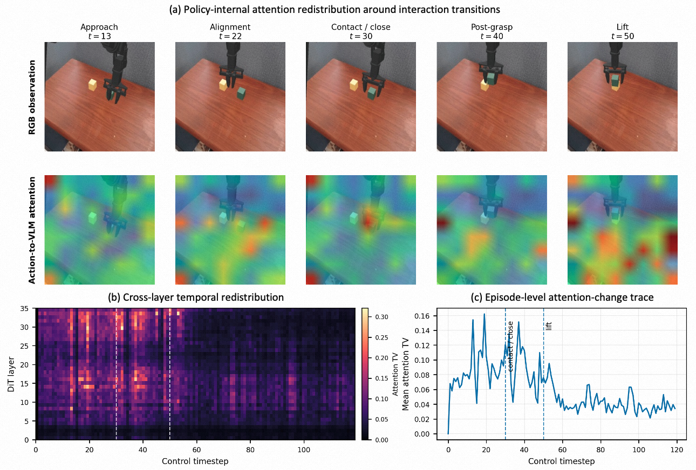

arXiv:2608.09448v2 · 2026
VANE
Reliable Test-Time Training for Vision-Language-Action Models via Future Visual Representation Prediction
1The Chinese University of Hong Kong, Shenzhen
2Beijing University of Posts and Telecommunications
3Institute of Automation, Chinese Academy of Sciences
4University of Chinese Academy of Sciences
5Li Auto Inc.
Adapt only when the interaction calls for it — and deploy an update only when future evidence supports it.
Video
Validated adaptation recovers where frozen prompts stall.
Overview
Reliable adaptation needs evidence, not optimism.
Test-time training offers a lightweight way to adapt VLA policies from unlabeled deployment streams, but closed-loop manipulation makes every online update consequential.
VANE conditions prompt adaptation on the current vision-language context and learns from the future visual consequences of executed actions. Candidate updates are isolated from the live policy, evaluated on subsequent observations, and committed only when supported by future evidence. The result is a selective and reversible deployment-time adaptation process.
Context-routed prompts
A Mixture of Latent Prompts composes task-dependent corrections from a shared prompt bank without requiring a task identifier.
Future-predictive supervision
The World-Predictive Interface learns from delayed visual representations that are available from ordinary robot interaction.
Validated online updates
AGV-TTT proposes sparse shadow updates at attention events, then commits or rolls them back using matched future observations.
Method
Three decisions, one adaptation pipeline.
VANE treats test-time adaptation as a sequence of constrained decisions rather than an unconditional optimization loop.
Route the correction
MoLP
Mixture of Latent Prompts
A frozen context router selects the top prompt components for the current observation and instruction. Only the shared prompt bank remains eligible for test-time updates.
Predict the consequence
WPI
World-Predictive Interface
A frozen V-JEPA 2 encoder turns later observations into future visual targets. The proxy predicts latent interaction outcomes rather than reconstructing RGB pixels.
Validate before deployment
AGV-TTT
Attention-Gated & Validation-Driven TTT
Attention redistribution triggers a shadow proposal. The live policy remains unchanged until paired future validation accepts the candidate and its optimizer state.
Deployment protocol
Propose in shadow. Validate on the future. Commit atomically.
- 1Act with the live promptThe deployed policy keeps full control of the trajectory.
- 2Detect an interaction eventCross-layer attention redistribution gates candidate creation.
- 3Update a shadow copyOne prompt-only AdamW step creates a candidate.
- 4Compare matched future pairsOld and candidate prompts see identical observations and randomness.
- 5Commit or roll backOnly evidence-backed candidates enter the live policy.
Results
Strong gains on WidowX, measured boundaries on Google Robot.
We first report the benchmark where the component gains are most consistent, then show efficiency and the complete cross-embodiment boundary test.
Primary benchmark
SimplerEnv WidowX
Success rate (%) over four tasks. Our rows are averaged over four consecutive checkpoints.
| Method | Carrot | Eggplant | Spoon | Cube | Overall |
|---|---|---|---|---|---|
| TTT-VLA (π0.5 + SG-LP + TTT) | 74.5 | 76.0 | 71.0 | 48.0 | 67.4 |
| QwenPi + SG-LP + TTT | 58.0 | 95.6 | 83.9 | 18.2 | 63.9 |
| QwenPi + MoLP + AGV-TTT | 64.6 | 97.1 | 84.9 | 28.4 | 68.8 |
| QwenWPI + FP-LP + TTT | 63.1 | 90.2 | 73.9 | 44.9 | 68.0 |
| QwenWPI + MoLP + AGV-TTT | 68.8 | 94.5 | 77.3 | 44.3 | 71.2 |
Cross-system comparisons do not isolate backbone, training-data, or adaptation effects. Controlled component attribution is reported in the paper.
Controlled comparison
Each component has a distinct role.
| Proxy | Prompt | No TTT | Offline | Online | AGV |
|---|---|---|---|---|---|
| State | Single | 64.3 | 63.9 | 64.7 | 65.9 |
| State | MoLP | 67.5 | 68.1 | 67.8 | 68.8 |
| WPI | Single | 67.5 | 68.0 | 67.5 | 69.0 |
| WPI | MoLP | 70.7 | 69.4 | 70.3 | 71.2 |
Optimization efficiency
Far fewer backward passes.
AGV-TTT reduces backward calls by 98.7% while improving single-prompt QwenWPI success from 67.5% to 69.0%. Validation adds 4,831 forward-only proxy evaluations.
Cross-embodiment boundary
Google Robot
71.7 → 76.7
+5.0 pp
SG-LP + TTT to MoLP + AGV-TTT
73.6 → 72.4
−1.2 pp
FP-LP + TTT to MoLP + AGV-TTT
70.7 → 71.7
+1.0 pp
SG-LP + TTT to MoLP + AGV-TTT
64.6 → 70.4
+5.8 pp
FP-LP + TTT to MoLP + AGV-TTT
Mechanistic analysis
Attention shifts mark interaction transitions.
Cross-layer redistribution becomes pronounced near contact, grasp closure, and post-grasp transitions. VANE uses this signal only to propose an update; future validation still decides whether the proposal is deployed.

Citation
Cite VANE
If this project is useful in your research, please cite the arXiv paper.
hongjinji@link.cuhk.edu.cn@article{ji2026vane,
title = {VANE: Reliable Test-Time Training for
Vision-Language-Action Models via Future
Visual Representation Prediction},
author = {Ji, Hongjin and Xia, Guoyang and Sun, Luoyang
and Feng, Fangxiang and Ren, Lei},
journal = {arXiv preprint arXiv:2608.09448},
year = {2026}
}